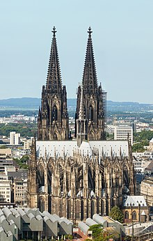

Lugares de interes para visitar en Alemania
Si planeas visitar Alemania y quieres conocer algunos de los lugares más emblemáticos, aquí tienes una lista de recomendaciones:
-

Puerta de Brandeburgo
Un símbolo icónico de Berlín y un lugar histórico que no te puedes perder.
-

Castillo de Neuschwanstein
Un castillo de cuento de hadas situado en los Alpes bávaros.
-

Catedral de Colonia
Una impresionante catedral gótica y Patrimonio de la Humanidad de la UNESCO.
-
Muro de Berlín
Un importante símbolo de la Guerra Fría y un lugar lleno de historia.